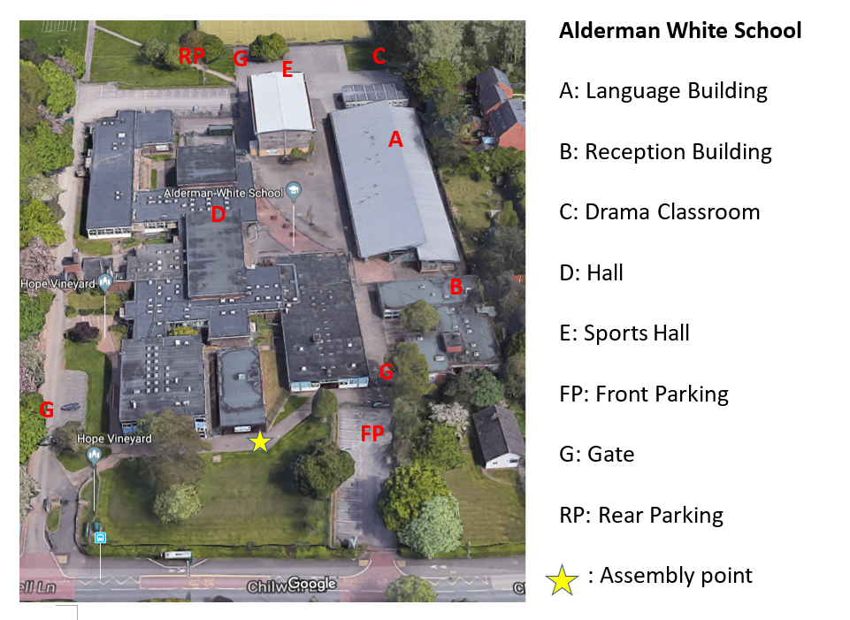

|
Nottingham Chinese School |
| |
Nottingham Chinese School |
Nottingham Chinese School was founded in 1999. In 2020 there were more than 300 pupils in 17 classes. The teaching is based on textbooks specially designed for overseas students (ages 4.5-18) studying Chinese. The teaching covers from beginners to GCSE and A level Chinese.
Nottingham Chinese School runs on Saturday afternoons, from 12:15 to 14:15, or from 14:30 to 16:30 for language classes. Activity classes (such as dancing, painting, musical instrument and caligraphy) run from 13:30 to 14:30, or 14:30 to 15:30.
Nottingham Chinese School is located at the Alderman White School, Chilwell Lane, Bramcote, NG9 3DU, Nottingham.
Quote from County Council Inspection Report 2007:
"... Lessons are well-strcutured with pupils focused and engaged ... Descipline is good, as is support from parents adn of course the Management Committee. This is a well run school with lots of innovation and a desire to continually improve ..."
The idea behind the school started in the begining of Feb 1999 by Dr Qingping Zheng and further effort was put together by Drs Zhang Kefei and Yi Wang with the support from members of the CSSA-NOTT. The school was officially founded on the 21st March 1999 and it is managed by the school committee. Since then the school has been progressing steadily.
| Headteacher | Dr Xuezhong Sun |
| Treasurer | Weimeng Xu |
| Secretary | Prof Hao Liu |
| Deputy Head & e-Learning | Dr Rong Qu, Li Li |
| Headteacher Assistant | Ying Li |
| Advisory Committee Members | Dr Yi Wang |
| Other Important Members | Yupeng Wu, Ming Li, Weibin Li，Jing Zhang |
| IT Support | Li Colling |
 Nottingham
Chinese School Calendar 2020 to 21
Nottingham
Chinese School Calendar 2020 to 21
Nottingham Chinese School provide various activity classes, including Chinese calligraphy, painting, dancing, recitation and musical intrument (Pipa). Activity classes are held from 13:15 ~ 14:15, or 14:30~15:30. For more details on activity classes and their availability, please contact school.
School map is shown below:
| Class | Teacher | Time | Location |
|---|---|---|---|
| Dancing | S. Dong (董) | 13:30pm ~ 14:30pm | Drama Classroom |
| Music | S. Zhang (张) | 14:30pm ~ 16:30pm | Language Building |
| Calligraphy | Y. Li (李) | 13:15pm ~ 14:15pm | Language Building |
| Painting | F. Lee (李) | 13:15pm ~ 14:15pm or 14:30pm ~ 15:30pm | Library |
Language lessons range from reception class up to A-level.
| Class | Teacher | Time | Location |
|---|---|---|---|
| Reception 1 | T. Zhang (张) | 12:15pm ~ 14:15pm | Language Building |
| Reception 2 | T. Zhang (张) | 14:30pm ~ 16:30pm | Language Building |
| Class 1a | Y. Deng (邓) | 12:15pm ~ 14:15pm | Language Building |
| Class 1b | Y. Deng (邓) | 14:30pm ~ 16:30pm | Language Building |
| Class 1c | Y. Li (李) | 12:15pm ~ 14:15pm | Language Building |
| Class 2a | Q. Shi (史) | 12:15pm ~ 14:15pm | Language Building |
| Class 2b | Y. Li (李) | 14:30pm ~ 16:30pm | Language Building |
| Class 3a | G. Wang (王) | 12:15pm ~ 14:15pm | Language Building |
| Class 3b | Y. Minnican (潘) | 14:30pm ~ 16:30pm | Language Building |
| Class 4a | S. Guo (郭) | 12:15pm ~ 14:15pm | Language Building |
| Class 4b | L. Ye (叶) | 14:30pm ~ 16:30pm | Language Building |
| Class 5a | J. Liao (廖) | 12:15pm ~ 14:15pm | Language Building |
| Class 5b | S. Dong (董) | 14:30pm ~ 16:30pm | Language Building |
| Class 6 | C. Jiang (蒋) | 14:30pm ~ 16:30pm | Language Building |
| Class 7 | Y. Chen (陈) | 14:30pm ~ 16:30pm | Language Building |
| Class 8 / GCSE | J. Tang (唐) | 13:30pm ~ 16:30pm | Language Building |
| Class 9 / A-level | S. Brealey (常) | 14:30pm ~ 16:30pm | Language Building |
|
|
|
|
|
|
|
|